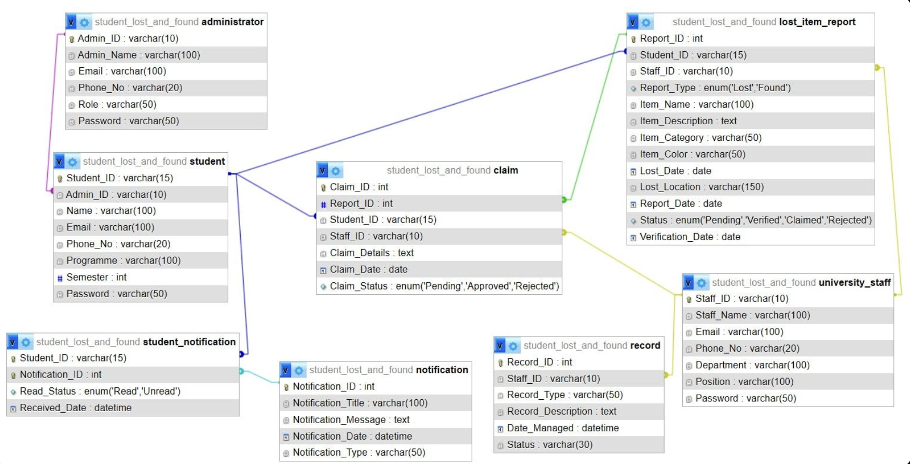
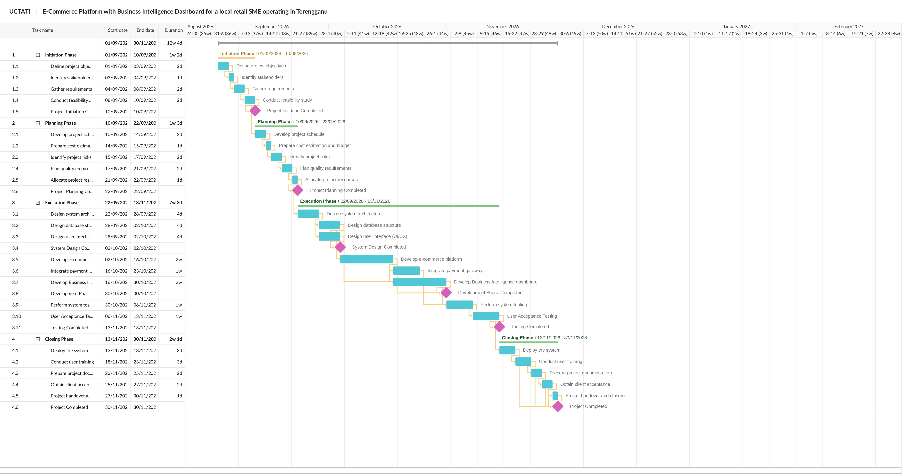

Curated Works & Academic Projects
My Portfolio & Projects
This page showcases some of my academic projects, practical assignments, and technical skills gained throughout my studies.
Featured Academic Projects

Application Development
Movie Collection Manager
Developed a movie collection application to help users manage and organise their movie records.
Tools: Flutter, SQLite, Provider

Database Systems
Database Management Project
Designed an ERD and manually created database tables using MySQL to organise data and establish relationships.
Tools: MySQL, MySQL Workbench

Project Management
SME E-Commerce Project Plan
Created a project plan for an SME e-commerce system, covering project scheduling, budgeting, and task allocation.
Tools: Project Planning, Gantt Chart, Budget Planning
Technical Skills Practised
Key competencies developed through coursework and independent practice:
- Web Development: Creating web pages using HTML and CSS.
- Application Development: Developing a movie collection application using Flutter.
- Database Management: Designing ERDs and creating database tables using MySQL.
- Project Management: Preparing project schedules, Gantt charts, and budget plans.
My Digital Footprint
Explore my online presence and coding activities through these platforms.
Code & Projects
GitHub
A platform where I can share my coding projects, explore repositories, and track my development progress.
Visit My GitHub ↗